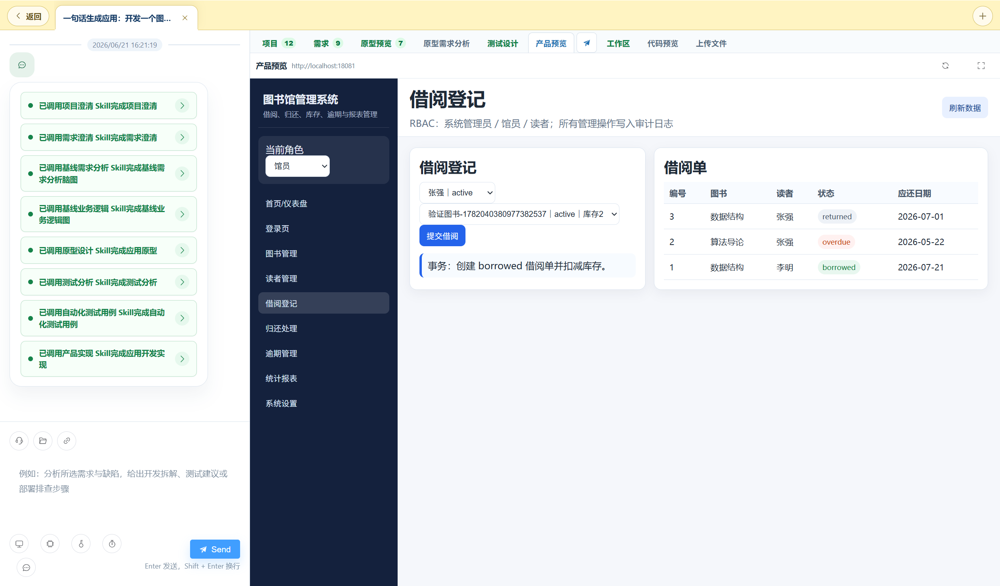

B
从"能生成"
到 "敢交付"
BearAI · 企业级全链路AI开发工作平台
一句话 → 可交付应用
四道质量兜底
可追溯 · 可审核
企业引入 AI 开发的三大痛点
AI 直接从一句话跳到代码，中间的一切全靠猜
痛点一 · 可信度
AI 会「幻觉」
凭空造出没人要的功能，企业不敢直接信。
痛点二 · 一致性
需求到代码全程割裂
需求、开发、测试三份理解，没人说得清对不对应。
痛点三 · 可控性
能力越用越多
谁在什么时候用了什么，管不住、追不回。
痛点场景实录 · 不是概念，是真实会发生的事
三个场景，看 AI 开发 如何"翻车"
① 幻觉
"做一个客户反馈管理系统。"
AI 顺手加了个「客户满意度评分」——因为它"觉得"该有。你没提过，但代码和界面都做好了，看着还挺合理。
⚠ 一路带到上线，占资源、还可能违规收集数据，返工成本极高。
② 割裂
需求 → 开发 → 测试，三份理解。
产品写文档、开发按自己理解写代码、测试拿文档写用例。三周后上线，"超时提醒规则"和最初提的不一样。
⚠ 排查责任比修 bug 还久，系统越大越滚越乱。
③ 失控
AI 被配了"直接部署到生产"。
新同事顺手勾选了「AI 部署执行」去做别的事，AI 真把一个没测完的版本部署上线了。
⚠ 回头查谁触发的、为什么，没人说得清——防不住、追不回。
痛点与机制一一对应
每个痛点，都有 平台内置的真机制兜底
| 核心痛点 | BearAI 对应机制 | 产生的效果 |
|---|
AI 会「幻觉」
企业不敢直接信 |
需求逐条「接受 / 不接受」
人工确认后才进入基线 |
杜绝凭空新增的
「幻觉需求」 |
需求到代码
全程割裂 |
需求 → 功能 → 测试
自动生成追踪矩阵 |
改动可追溯，
责任说得清 |
能力越用越多
谁用什么管不住 |
能力风险分级（low/medium/high）
+ 审核门禁 |
高风险动作
必须审核通过才能用 |
我们的解法
把 AI 装进一条 「可验收」的研发链路
不让它跳步。每一步产出结构化、可验收的产物，再作为下一步的可信输入。
选择「一句话生成应用」，平台自动串联全链路，产物层层递进、可追溯。
核心差异 · 护城河 · 可信 / 可追溯 / 可管控
四道防线，让 AI 产物 「敢用」
1🛡️
需求澄清兜底
需求逐条接受 / 不接受，你不接受的，绝不进实现。
防跳步 · 防幻觉
2🧬
上下文基线兜底
每阶段产物固化为基线，下阶段强制读基线而非模型记忆。
防失真 · 防串味
3🎯
测试前置兜底
写代码前就生成测试矩阵与原子测试点，质量要求前置。
防实现前漏洞
4🔍
全链路追溯兜底
产物全程沉淀，失败可精确定位、单点修正、不推倒重来。
防黑盒 · 可审计
别人交付「AI 生成的代码」，我们交付 经过验收、可追溯的研发资产。
不是空壳 · 平台内置的官方 AI 能力体系
1 个总控 + 5 个场景 Agent + 10 大官方 Skill
总控层
🧠 全链路总控 Agent统一调度 · 决定走多深的链路
▼ 按场景调度 ▼
场景层 · 对应 5 种会话类型
场景①一句话
生成应用
场景②一句话
需求
场景③从需求
澄清开始
场景④已有
原型图
场景⑤对话
探索
▼ 调用官方 Skill ▼
能力层 · 10 大官方 Skill
1项目源头标准化
2项目澄清打磨
3需求源头标准化
4需求澄清打磨
5基线需求分析
6业务逻辑分析
7项目原型设计
8测试分析
9自动化测试用例
10项目产品实现
组织现状
AI 已能做每个岗位的活
企业却离不开每个岗位的人
AI 干得了活，却 担不了责 —— 缺的是「让专业的人为 AI 把关」的机制。
三种模式 · 三种结局
同样交付一个软件，哪种才敢规模化？
① 现状
各岗位分散用 AI
产品用 AI 写需求
开发用 AI 写代码
测试用 AI 写用例
…各干各的
😰 产物割裂 · 无人对全局负责
② 当红
FDE 一人全包
一个「前向部署工程师」
独自借助 AI 完成：
需求 → 开发 → 测试 → 交付
无 bug 可交付软件
⚠️ 依赖个人 · 难复制 · 不可规模化
⭐
③ 我们的答案
资深员工 + BearAI
各岗位资深员工在平台协同交付
每个关键节点产物
由对应岗位资深员工
审核 · 修改 · 确认
✅ 全链路把关 · 可交付 · 可规模化 · 可治理
AI 提速 · 资深员工把关 · 平台兜底 —— 企业级 AI 研发该有的样子
给企业的价值
研发角色升维，交付能力翻倍
不裁员，而是升维资深员工从"埋头干活"变成"审核把关"，一个人盯住的交付量翻倍。
能力可复制不再依赖稀缺的 FDE 天才，把专家的判断力沉淀进平台流程。
质量可治理每个节点谁确认、改了什么全程可追溯，AI 开发第一次有「责任链」。
规模化交付从"一个牛人交付一个项目"，到"一个团队用平台交付一批项目"。
 全链路产物工作区
全链路产物工作区 需求可确认
需求可确认
战略底座 · 企业级准入门槛
会话治理 + Harness CI/CD 无缝对接
🛡️ AI 会话工作区治理 即将落地
- 每个会话完整上下文可审计、可回放、可归档
- 高风险能力强制人工二次确认，不可绕过
- 会话内文件权限管控，防敏感信息外泄
- 能力使用成本计量，生成 AI 合规报告
🔗 Harness CI/CD 对接 即将落地
- 企业无需替换现有 DevOps工具链
- 代码提交 → Pipeline → AI 测试闸门自动触发
- 构建产物直接生成平台交付制品
- 缺陷自动回流 Harness，形成双向闭环
REAL PRODUCT · 真实产品界面
不是渲染图，是平台真实工作界面

AI 会话中枢 · 全链路 Skill 自动串联
▶
现场 DEMO · 不是流程图，是真的跑得通
不是秒出黑盒，而是每一步都可见、可确认
① 输入一句话需求
② 选「一句话生成应用」
③ 看链路逐阶段执行
④ 每步产物沉淀
⑤ 打开产品预览
"需求逐条确认 · 逻辑基于基线 · 代码基于测试 —— 每一步你都能看到、能介入。"
让 AI 写的代码，敢上生产
扫码交流 · 加入社群 · 体验平台

⬚放置二维码图片
assets/qr-wechat.png
我的微信加我一对一交流

⬚放置二维码图片
assets/qr-group.png
微信交流群加入产品社群
⬚放置二维码图片
assets/qr-website.png
官网了解更多 · 在线体验
▶ 演示环境：http://47.239.120.204